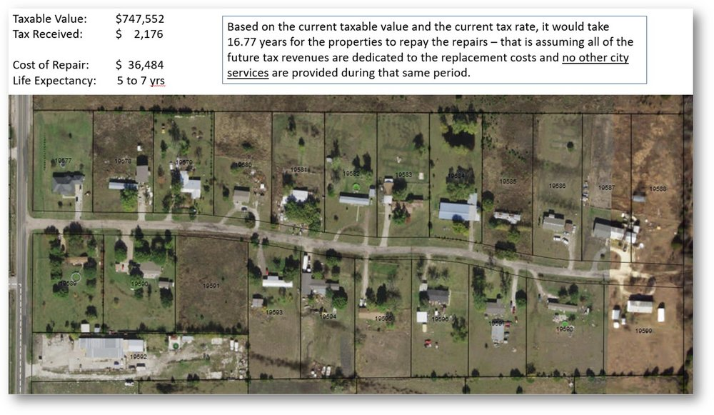

The term "Suburban Experiment" was coined by the nonprofit organization Strong Towns. This organization seeks to replace America's current pattern of development with a method that is more financially stable.
The Suburban Experiment is defined as the building of a cluster of new developments all at once and to a finished state. This experiment began after World War II with the advent of the automobile, and has been the default building methodology in a majority of the U.S outside of urban centers ever since.
There are three major characteristics of the Suburban Experiment, those being large sprawls of near identical and spaced housing contained within individual neighborhoods, separation of commercial and residential areas, and finally the dependence on cars to get from said residential areas to commercial areas. The first characteristic can be seen clearly in the image above, in which you see a seemingly endless spread of houses and lawns.
When comparing a traditional development methodology to the Suburban Experiment, many flaws start to appear. Although there are many things that make suburbs problematic, but for now, the three will be on four that may be the most prominent:
As stated before, suburbs are built all at once and to a finished state. This means that once they're built, they become frozen in place and are very resistant to growth. As soon as a development goes up, that entire area cannot be used for anything except for housing, meaning no additional developments that can improve the area can be built. These additional developments may include parks, small commercial buildings such as salons, bakeries, shops, etc. It is also quite difficult to change regulations relating to suburbs. When new towns are made, they typically create zoning laws that make it difficult to build anything in the area that isn't more suburban sprawl.
The issue of financial stability is also related to how suburbs are built. In 2018,the local government in Fate, Texas held a meeting in which it was discussed how much it would cost in taxable value to pay for the maintenance of a single dead end street within the city.
As you can see in the image above, it would take 16.77 years for the properties on that land to pay for the repairs of that road, without considering any other city services. When you consider how many similar streets there may be in this city, you can imagine how unsustainable it is for the city to do basic repairs. This land is not likely to ever greatly increase in value as the surrounding area is most likely unable to be used by any other types of development aside from residential use.
This greatly differs from a more traditional development methodology as developments are typically created gradually as the town grows naturally, which means that the town is usually able to financially sustain itself.
As the automobile became more and more prominent, city builders began constructing cities for the car, rather than for people. This did not only effect the size of cities and towns, but also the size of things such as buildings, housing plots, etc. You can see this simply by looking out the window or by taking a drive around your area. You may notice roads are extremely wide to fit more cars, buildings are built extremely far from the road and the sidewalk to fit an exorbitant amount of parking spaces, and even things like road signs are built to be viewed from inside a car rather than by someone walking.
This increased scale has a negative effect on people who live in the area both physically and mentally. For example, car fatalities occur around 38,000 times per year on average. Driving is also on of people's least favorite things to do. On top of this, it was found in a study that people who walk, bike, or take some sort of public transit typically weight less, live longer, and are less depressed than people who have to drive frequently.